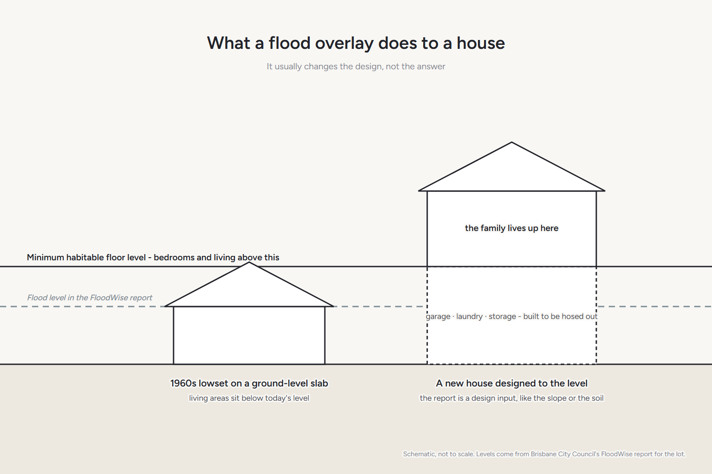

Your questions answered · Knockdown rebuild
Rebuilding on a flood overlay block
on the Bayside: what changes?
A flood overlay on your block sounds like the end of the conversation. On the Bayside it usually isn't. It changes what gets designed, not whether you can build. Here's how to read council's own report on your lot, and what it does to a new house.

What is a flood overlay, and which one do we have?
An overlay is a map layer in Brisbane City Plan 2014 that tells council, and you, that a rule applies to your land on top of the ordinary zoning. The character overlay is one. The flood overlays are another set.
There isn't one flood overlay. Council maps flooding from rivers, from creeks and waterways, from storm tide off the bay, and from overland flow — the water that runs across land in a downpour before it reaches a drain. A block can be in none, one or several.
So the first job is not to worry about “the flood overlay.” It's to find out which ones touch your lot, and at what level.
How do we get council's report on our lot?
Council publishes it online, and you don't need to ask anyone.
- Go to council's Flood Awareness Map. Choose I am a resident, business or visitor, then search the map for your address.
- The Flooding Overview panel shows which types of flooding could affect the property, and how likely each is.
- Click Technical FloodWise Property Report. Council says it downloads in about 20 seconds.
The FloodWise Property Report “includes technical flood information for building and development” and is “based on the latest adopted flood planning information in Council's planning scheme, Brisbane City Plan 2014.” It shows flood levels for the 0.2%, 1%, 2%, 5% and 20% AEP events, the minimum habitable floor level, and which City Plan overlays for river, creek, overland flow and coastal hazard apply.
Brisbane City Council, FloodWise Property Reports. That report is the document a builder and a certifier work from. Print it before you talk to anyone.
Two things to know when you read it.
- AEP means annual exceedance probability. A 1% AEP flood has a one-in-a-hundred chance of happening in any given year. It's not “once a century.” It can happen two years running.
- The aerial map in the report does not show overland flow. Council says so on the page. A lot that looks clear on the picture can still carry an overland flow flag further down the report.
Which of the four kinds of flooding matter on the Bayside?
Wynnum, Manly and Lota don't sit on the Brisbane River, so river flooding is rarely the issue it is in the western suburbs. What the Bayside has instead:
- Storm tide. The bay pushed up by a storm and a high tide together. Council maps it under the coastal hazard overlay, and it's the one that decides floor levels closest to the water.
- Creek and waterway flooding. The creeks that drain to the bay back up when the tide is high and the rain is heavy at the same time.
- Overland flow. The one nobody expects on a block that's never been near a creek. In a Queensland downpour, water runs across land before the drains can take it, and low points on old blocks collect it.
“It is important to note that flooding may still present a risk and could include overland flow, which is shown as a property development flag further down the report.”
Brisbane City Council, FloodWise Property Reports, on lots where no river, creek or storm tide level has been assigned. In plain words: no levels on the graph does not mean no flood rules on the lot.
What does it do to the design of a new house?
This is where an overlay stops being a worry and becomes a brief.
The floor goes up. The report gives a minimum habitable floor level. Bedrooms and living areas have to sit at or above it. On a lot near the water that can mean the house is highset, or the ground floor holds the garage, laundry and storage while the family lives upstairs.
The plan turns around. A house designed for the level, rather than fitted to it afterwards, puts the rooms that matter where the water can't reach and uses the space underneath for the things that can get wet.
The materials change downstairs. What's below the flood level is built to be hosed out, not rebuilt. That's a detail decision, and it's cheap to get right at the drawing stage and expensive to get right later.
This is the reason we'd rather design to your block than fit a plan to it. A package house drawn for a flat estate lot doesn't know your floor level. Your block does.
What does it do to the approval?
If a flood overlay applies, the report tells you there are flood planning requirements for development. The design has to show it meets them. That's part of the normal approval, handled by the designer and the certifier, and it's paperwork rather than a fight.
What it isn't, on the Bayside, is a bar. Streets one back from the esplanade have been rebuilt to the current levels for years, and you can see the result: the living areas up, the ground floor open or built for storage.
Common questions
Our house has never flooded. Why is there an overlay?
The overlays are modelled, not a record of what's happened. Council maps where water would go in events of a given likelihood, including ones that haven't occurred in your time on the block. A dry history is good news; it isn't the same as no rules.
Does an overlay mean we can't have a lowset house?
It depends on the minimum habitable floor level in your report against the ground level on your lot. Sometimes a lowset house on a raised slab meets it. Sometimes the numbers push you highset. The report and a builder on the block will tell you which.
Will it change our insurance?
We're builders, not insurers, so ask yours. What we can say is that a new house designed to the current flood levels is a different proposition from a 1960s house that wasn't, and it's worth telling the insurer that.
Can you read the report for us?
Yes. Bring it to the walk-through, or we'll pull it together. Nathan will tell you what the levels mean for your block and what they'd do to a design.
Sources: Brisbane City Council, FloodWise Property Reports and Flood Awareness Online; Brisbane City Plan 2014. Read 17 September 2026. This is a plain-English guide, not planning, engineering or insurance advice. Council's flood information is updated from time to time; read the current report for your lot before you decide anything.
Where most families start
A walk through your house with Nathan.
Bring the FloodWise report, or don't — he'll pull it with you and walk the block with the levels in hand.
Book your walk-through with Nathan Call 0422 831 306
Already thinking about a rebuild? The free block check is on the same page.